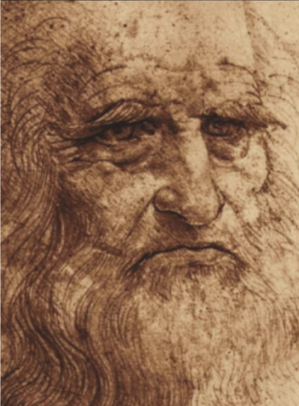

Alessandro di Mariano di Vanni Filipepi, mejor conocido como Boticelli, fue un destacado representante del renacimiento florentino del quattrocento. Desarrolló un estilo que no perseguía el naturalismo sino que se enfocaba en la delicadeza y la gracia, lo que le permitió crear retratos femeninos notables, especialmente de madonnas y diosas mitológicas. Sus mujeres ideales reflejaban las ideas neoplatónicas en boga en la época. Sin embargo, no descuidaba la perspectiva, dominaba la aplicación del color y lograba magníficos volúmenes. Botticelli, protegido por los Medici, fue incentivado a pintar mitos de la antigüedad, alegorías paganas y otros temas novedosos. En ese momento, la creación de obras de gran formato que no fueran de temática religiosa era algo innovador, lo que contribuyó a que Botticelli se convirtiera en uno de los primeros artistas en hacerlo y gozara de gran prestigio, aunque no llegara a tener la misma veneración que otros maestros del quattrocento.
Michelangelo Buonarroti, un hombre del Renacimiento, se destacó como arquitecto, pintor y poeta, pero su verdadera pasión, vocación y obsesión era la escultura. En este campo, sobresalió por encima de todo lo demás. Desde su infancia, supo que su vocación era ser artista, aunque su padre no estaba de acuerdo con su elección. En aquellos tiempos, la profesión de artista no era tan respetada como lo fue en otras épocas. Sin embargo, gracias a su talento, fue invitado por Lorenzo el Magnífico a vivir en su palacio/escuela. Su arte era conocido en toda Italia y pronto los poderosos quisieron adquirir sus obras. Miguel Ángel creó esculturas y frescos prodigiosos, todos ellos considerados obras maestras indiscutibles.
Van Eyck fue uno de los primeros artistas en firmar y fechar su obra, lo que demuestra su conciencia sobre la importancia de su oficio. Provenía de una familia de pintores en Lieja y probablemente comenzó su carrera en la miniatura, lo que explicaría su técnica refinada y su atención al detalle. En su época, junto con Masaccio, fue uno de los pocos artistas que se esforzó por representar la realidad de forma "fotográfica". Las dos obras más famosas de Jan van Eyck son la "Virgen del Canciller Rolin" y el "Retrato del Matrimonio Arnolfini", ambas consideradas revolucionarias en técnica y concepto. Gracias a ellas, Van Eyck es considerado el fundador del retrato occidental, ya que en ellas los ojos a menudo miran directamente al espectador, lo que fue una innovación radical en su época. Además, sorprende la exactitud con la que reflejaba a sus modelos. Su estilo detallista, la precisión en la representación de texturas e iluminación, y su búsqueda por crear la ilusión de perspectiva hacen que se asemeje casi a un científico.
Leonardo da Vinci nació en 1452 en la villa toscana de Vinci. Era hijo de una campesina y un notario, que tuvo 11 hijos en total (todos varones). Desde niño, Leonardo mostró una insaciable curiosidad, dibujando animales mitológicos que combinaban realidad y fantasía. Se perfeccionó en el taller de Verrocchio, aprendiendo pintura, escultura y otras artes. Se interesó en la pintura al óleo, una técnica innovadora que llegó de los Países Bajos. Con ella, desarrolló nuevas técnicas de composición y claroscuro. Además de ser un artista, Leonardo fue un experto en campos como la aerodinámica, la cocina, la hidráulica, la anatomía y la botánica. Leonardo es conocido principalmente por su pintura, escultura y arquitectura, y junto a Miguel Ángel y Rafael, forma parte de la santísima trinidad del arte renacentista. Pasó sus últimos años en Roma y en el palacio de Cloux, donde fue nombrado "primer pintor, arquitecto y mecánico del rey". Aunque su brazo derecho quedó paralizado, aún era muy hábil con su mano izquierda.
Raffaello Sanzio fue un artista italiano del alto renacimiento, posiblemente el más talentoso de su época. Desde una edad temprana demostró ser un niño prodigio y superó rápidamente a todos sus maestros. A los 25 años ya estaba pintando obras importantes, como los frescos de la Escuela de Atenas en las Estancias Vaticanas. Su buen comportamiento y actitud positiva hacia la pintura contribuyó a que los artistas fueran vistos como personas más respetadas. Fue uno de los primeros artistas en firmar sus obras, lo que sugiere que estaba orgulloso de su oficio y pensaba en su legado. Además, era muy popular socialmente, y a menudo regalaba sus dibujos a otros pintores para ayudarlos en tiempos económicos difíciles. También tenía un gran número de aprendices en su taller y les enseñaba personalmente técnicas de pintura.
Para encontrar más análisis sobre el arte renacentista, ingresar a: